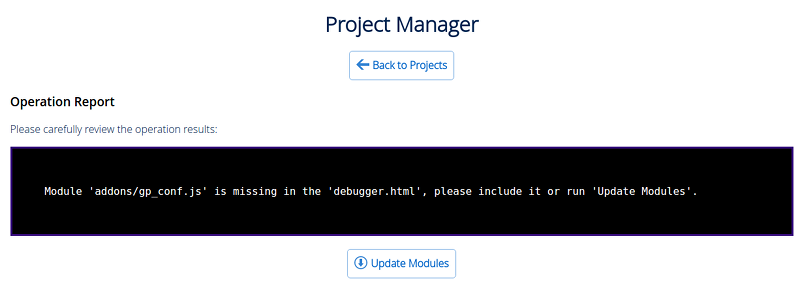
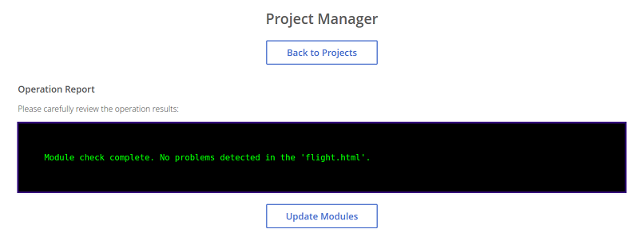
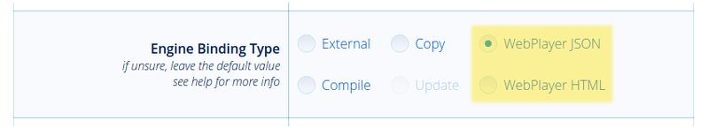
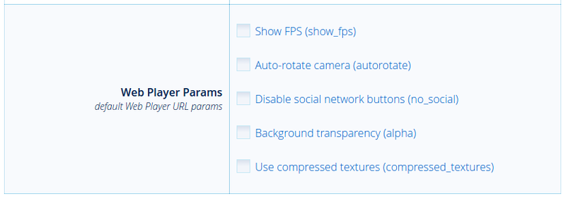

Управление проектами¶
Содержание
- Управление проектами
- Менеджер проектов
- Расширенное управление проектами
- Зависимости
- Список проектов
- Структура проекта
- Конфигурационный файл проекта (.b4w_project)
- Создание проекта
- Разработка нескольких приложений в составе проекта
- Сборка проекта
- Автоматический экспорт blend-файлов
- Конвертация ресурсов
- Развертывание проекта
- Удаление проекта
- Обновление приложений на новые версии SDK
Начиная с версии 15.09, SDK включает систему управления проектами, которая позволяет:
просматривать список и внутреннюю структуру имеющихся проектов;
запускать приложения, просматривать сцены в программе-просмотрщике, загружать исходные файлы сцен в Blender;
создавать и конфигурировать новые приложения, в том числе на основе готовых шаблонов;
осуществлять сборку приложения и его конверсию в форму, удобную для последующего размещения на сервере;
конвертировать ресурсы приложения (текстуры, звуковые и видео-файлы) в альтернативные форматы для обеспечения кроссбраузерности и кроссплатформенности;
автоматизировать повторный экспорт всех сцен из состава приложения, включая файлы в формате JSON и HTML;
удалять проекты.
Менеджер проектов¶
Приложение Project Manager доступно из раздела Tools главной страницы SDK. При запуске приложение выводит список из всех проектов, находящихся в установленном SDK.

Команды для управления проектами находятся в верхней части страницы.

- Back to Index
Возвращает на индексную страницу Blend4Web SDK.
- Create New Project
Открывает мастер создания новых проектов.
- Import Project(s)
Открывает диалог импорта проектов.
- Export Project(s)
Открывает страницу экспорта проектов.
- Hide Stock Projects
Позволяет скрыть шаблонные проекты, присутствующие в SDK по умолчанию. Если они уже скрыты, место этой команды занимает команда
Show Stock Projects.- Help
Вызывает справку.
Команды управления конкретным проектом находятся справа от него.
Примечание
Некоторые команды могут быть недоступны в зависимости от типа проекта.
Сборка проекта (недоступно для типов проекта WebPlayer JSON и WebPlayer HTML).
Проверка отсутствующих или неиспользуемых модулей API (недоступно для типов проекта WebPlayer JSON и WebPlayer HTML).
При активации этой опции менеджер проектов проверяет модули, используемые приложением, и выводит результаты проверки в консоль. Ниже приведены возможные предупреждения:
При отсутствии одного или нескольких модулей API в папке проекта выводится следующее сообщение:
Module `module_name` is missing in the `project_name.html` project, please include it or run `Update Modules`.
Отсутствующие модули могут быть добавлены в проект при помощи кнопки
Update Modules.Если в проекте присутствует один или несколько модулей API, не используемых в программном коде, выводится следующее сообщение:
Incorrect module `module_name` in the `project_name.html`, please remove it or run `Update Modules`.

Модули, не используемые в проекте, могут быть удалены из него при помощи кнопки
Update Modules.В том случае, если никаких проблем не обнаружено, выводится следующее сообщение:
Module check complete. No problems detected in the `module_name.html`.
Реэкспорт блендеровских сцен в проекте.
Удаление проекта со всеми зависимостями.
Обновить файловую структуру. Доступно только для проектов, созданных при помощи более ранней версии Blend4Web, чем версия 16.12.
Примечание
Все пути берутся из конфигурационного файла .b4w_project.
Рядом с именем проекта расположены ссылки на:
Там же указан тип приложения. Приложение может иметь один из следующих типов:
- Player
Приложение запускается при помощи веб-плеера.
- Dev
Приложение для разработки
- Build
Скомпилированное приложение.
Мастер создания проектов¶
Мастер создания новых проектов входит в состав приложения Project Manager и вызывается по ссылке [Create New Project] на главной странице этого приложения.

Кнопка [Back to Projects] используется для возвращения на главную страницу менеджера проектов, а кнопка [Help] вызывает справку.
Имя проекта. Текущим именем будут названы директории в “projects/имя_проекта”, “projects/имя_проекта/assets”, “projects/имя_проекта/blender” и “projects/имя_проекта/build”. Для лучшей совместимости рекомендуется использовать буквы и нижнее подчеркивание.
Название проекта. Это имя будет показываться в заголовке веб-браузера.
Имя автора проекта.
Добавить шаблоны приложения. В директорию проекта “projects/имя_проекта” будут добавлены стандартные шаблоны приложения: html-файл, css-файл, js-файл.
Добавить шаблоны сцены. В директорию “projects/имя_проекта/assets” будет добавлен стандартный json-файл; в директорию “projects/имя_проекта/blender” - blend-файл.
Использовать библиотеку материалов. Blend-файлы библиотеки материалов будут скопированы в директорию проекта “blender/project_name”, файлы медиаресурсов - в директорию “projects/project_name/assets”.
Скопировать скрипт менеджера проектов. Скрипт project.py будет скопирован в директорию проекта.
Тип собираемого проекта. Здесь возможны варианты:
Copy- файлы движка прямо копируются в папку приложения из каталогаdeploy/apps/common/.При сборке проекта компилируются только файлы приложения, но не движка (т.е. сам движок не может быть модифицирован);
Compile- исходники движка компилируются вместе со скриптами приложения.Этот вариант применяется, если необходимо внести изменения в исходный код самого движка;
None- движок не копируется в директорию проекта, также менеджер проектов не производит никаких действий при сборке проекта. Разработчик приложения должен самостоятельно производить все необходимые операции;Web Player JSON- json-файл, находящийся в проекте, запускается при помощи веб-плеера в составе SDK;Web Player HTML- проект состоит из html-файла, внутри которого находятся все необходимые ресурсы.
Уровень оптимизации javascript.
“Simple” - в коде заменяются имена переменных;
“Advanced” - производится оптимизация кода;
“Whitespace Only” - в коде удаляются только пробелы.
URL-атрибуты Веб-плеера. Эта вкладка доступна только если параметр
Engine Binding Typeимеет значениеWeb Player JSONилиWeb Player HTML.“Show FPS” - включает счётчик кадров в секунду в правом верхнем углу окна веб-плеера.
“Auto-rotate camera” включает автоматическое вращение камеры сразу после загрузки сцены.
“Disable social network buttons” используется для отключения кнопок социальных сетей на панели управления.
“Background transparency” используется для установки прозрачности области отрисовки.
“Use compressed textures” используется для включения загрузки уменьшенных текстур и текстур с компрессией (формат DDS).
Создание приложений для Веб-плеера¶
Главное преимущество приложений для Веб-плеера - простота размещения подобных приложений на веб-страницах.
{kind=link}
Создать приложение для Веб-плеера несложно. Для этого достаточно при создании нового проекта выбрать опцию Web Player JSON или Web Player HTML на вкладке Application Type.
Проекты для веб-плеера обладают практически тем же набором параметров, что и проекты других типов. Единственное исключение - группа параметров, известная как Web Player Params.
Настройки проекта¶
{kind=link}
Эта вкладка доступна только в том случае, если включена опция Web Player JSON или Web Player HTML. Перечисленные здесь параметры по сути представляют собой URL-атрибуты, которые веб-плеер будет использовать при запуске проекта.
Сборка и размещение проекта¶
После того, как работа над проектом завершена, проект может быть собран и размещён на веб-сервере. Этим операциями посвящён отдельный раздел.
Информация о проекте¶
Эта страница содержит информацию о выбранном проекте и доступна по ссылке [info] рядом с его названием.
{kind=link}
Параметры проекта¶
- Project Name
Имя проекта
- Project Title
Название проекта. Это имя будет показываться в заголовке веб-браузера.
- Project Author / Company
Имя автора проекта или название компании-разработчика проекта.
- Project Icon
Пиктограмма проекта.
- Applications
Приложения проекта.
- Engine Binding Type
Тип собираемого проекта.
- Project Path (Development Directory)
Каталог проекта.
- Project Config
Конфигурационный файл проекта.
- Build Directory
Каталог, содержащий скомпилированный проекта.
- Blend Directory(s)
Каталоги, в которых располагаются blend-файлы проекта.
- Assets Directory(s)
Каталоги, в которых располагаются медиаресурсы проекта.
- URL Params
URL-параметры, применяемые при запуске приложения.
- JavaScript Obfuscation Level
Уровень оптимизации javascript.
- JS Compilation Pass-Through List
Список исключений для компиляции JavaScript-файлов проекта.
- CSS Compilation Pass-Through List
Список исключений для компиляции таблиц стилей проекта.
- Build Ignore List
Список исключений для сборок проекта.
- Deployment Assets Directory
Каталог, который будет содержать медиаресурсы размещённого проекта.
- Deployment Assets URL Prefix
URL-префикс пути к папке медиаресурсов размещённого проекта, возвращаемый функцией get_assets_path().
- Deployment Ignore List
Список исключений для размещения проекта.
Редактирование проекта¶
По ссылке [edit] рядом с названием проекта доступен простой веб-интерфейс для редактирования файлов проекта.

Левая часть окна редактора содержит список всех .html-, .css- и .js-файлов, находящихся в директории проекта (projects/<мой_проект>). Правая часть содержит текст выбранного файла (по умолчанию файл не выбран) с подсвеченным синтаксисом.
Примечание
Этот интерфейс может использоваться только для редактирования файлов версии для разработки, но не файлов собранной версии.
Новые файлы .html, .js и .css могут быть добавлены в директорию проекта при помощи кнопки [New File].
Для сохранения выбранного файла используются кнопки [Save] и [Save As...] в нижней части страницы.
Конфигурационный файл проекта¶
Веб-интерфейс, позволяющий просматривать и изменять параметры проекта после его создания.

Параметры на этой странице включают все параметры, доступные при создании проекта, а также несколько дополнительных. Некоторые из параметров доступны только для чтения (и не могут быть изменены после того, как проект создан).
Группа параметров Info¶
- Name
Имя проекта
Этот параметр доступен только для чтения.
- Title
Название проекта. Это имя будет показываться в заголовке веб-браузера.
- Author
Имя автора проекта или название компании-разработчика проекта.
- Icon
Пиктограмма проекта в Менеджере проектов.
Кнопка
Choose Fileприменяется для замены пиктограммы. По умолчанию пиктограмма не указана (в этом случае используется логотип Blend4Web).
Группа параметров Build¶
- Apps
Список
.HTMLфайлов проекта, используемых при компиляции приложений. Каждый.HTMLфайл, указанный здесь, будет считаться отдельным независимым приложением.- Use Physics
Определяет, добавлять ли файлы физического движка в проект. Может быть отключено в случае, если проект не использует физику.
Данная опция всегда отключена для проектов типа WebPlayer HTML и всегда включена для типа WebPlayer JSON. У проектов всех остальных типов может быть установлена вручную.
- Application Type
Тип собираемого проекта.
Этот параметр доступен только для чтения, т.к. проекты разных типов обладают различной внутренней структурой.
- JavaScript Obfuscation Level
Уровень оптимизации JavaScript для компиляции приложения.
Для проектов типа None, WebPlayer HTML и WebPlayer JSON доступен только для чтения.
- JS Compilation Pass-Through List
Список исключений для компиляции JavaScript-файлов проекта.
- CSS Compilation Pass-Through List
Список исключений для CSS-файлов проекта.
- Build Ignore List
Список исключений для сборок проекта.
Группа параметров Paths¶
- Developer Project Path
Путь к версии приложения, предназначенной для разработки
Этот параметр доступен только для чтения.
- Build Project Path
Путь к скомпилированному приложению.
- Blend Directory(s)
Путь(и) к каталогу(ам) blend-файлов.
- Assets Directory(s)
Путь(и) к каталогу(ам) медиаресурсов.
- Blender Exec
Путь к исполняемому файлу Blender.
- Deployment Path
Путь к каталогу, предназначенному для финального размещения приложения.
Группа параметров Deploy¶
- Deployment Assets Directory
Каталог, который будет содержать медиаресурсы размещённого проекта.
- Deployment Assets URL Prefix
URL-префикс пути к папке медиаресурсов размещённого проекта, возвращаемый функцией get_assets_path().
- Deployment Ignore List
Список исключений для размещения проекта.
- Override Deployment Path
Удалить директорию размещения, если она существует.
URL GET Params¶
Здесь указываются дополнительные URL-параметры для ссылки на приложение, расположенной в интерфейсе менеджера проектов.
Изменённые параметры проекта сохраняются при помощи кнопки [Save Config], расположенной в нижней части страницы.
Импорт проектов¶
Средства импорта проектов вызываются по ссылке [Import Project(s)].
Нажатие на эту ссылку вызывает стандартный диалог открытия файла, где можно выбрать файл проекта, который требуется импортировать.
Экспорт проектов¶
Окно экспорта проекта вызывается по ссылке [Export Project(s)].
{kind=link}
Команды¶
- Back to Projects
Возвращает на главную страницу менеджера проектов.
- Hide Stock Projects
Скрывает стоковые проекты. Если они уже скрыты, место этой команды занимает команда
[Show Stock Projects].- Help
Вызывает справку.
- Export Project(s)
Экспортировать выбранные проекты.
Параметры проекта¶
- Select
Демонстрирует, выбран ли проект для экспорта.
- Name
Имя каталога проекта.
- Title
Заголовок проекта.
- Author
Имя автора проекта.
- Archive Name
Имя архива, в который будут запакованы экспортируемые проекты.
Размещение проекта¶
После завершения работы над проектом, выберите опцию deploy project на панели Operations, на главной странице менеджера проектов. После этого проект будет экспортирован и запакован в архив.
{kind=link}
Этот архив затем может быть загружен при помощи кнопки Download и сохранён в папку, которую ваш браузер использует для хранения загруженных файлов. Следует заметить, что, в зависимости от размера архива, загрузка может быть достаточно долгой.
Чтобы разместить проект на веб-странице, распакуйте архив и загрузите файлы, находящиеся в нём на веб-сервер с помощью FTP, SSH или любого другого протокола, поддерживаемого сервером.
Примечание
После загрузки на веб-сервер должна сохраняться внутренняя структура файлов архива и их относительные пути.
После этого приложение типа Web Player HTML можно разместить на веб-странице с помощью контейнера iframe. Ниже приводится пример HTML-кода, который можно использовать для этого:
<!DOCTYPE html>
<html>
<head>
<title>An Example Application</title>
</head>
<body>
<iframe width="800" height="500" allowfullscreen src="/projects/myproject/myproject.html"></iframe>
</body>
</html>
Размещение JSON-проекта происходит почти так же, но вместо одного HTML-файла используется комбинация веб-плеера и JSON-файла, содержащего саму сцену.
<!DOCTYPE html>
<html>
<head>
<title>Another Example Application</title>
</head>
<body>
<iframe width="800" height="500" allowfullscreen src="/myproject/webplayer.html?load=/projects/myproject/myproject.json&show_fps"></iframe>
</body>
</html>
Расширенное управление проектами¶
Расширенное управление проектами используется опытными разработчикам, которым необходима как большая степень гибкости, так и возможность автоматизировать все рабочие процессы, связанные с разработкой приложений.
Для расширенного управления проектами следует использовать скрипт project.py и ручное редактирование конфигурационных файлов .b4w_project.
Скрипт project.py расположен в Blend4Web SDK в директории ./apps_dev/. Если при создании проекта была выбрана опция Copy Project Management Script, то в директории самого проекта будет находится копия этого скрипта.
Зависимости¶
Система управления проектами работает на всех операционных системах, однако для некоторых операций может потребоваться установка дополнительных зависимостей. Проверить, установлены ли необходимые зависимости, можно с помощью команды:
./project.py check_deps
Для пользователей ОС Windows:
python project.py check_deps
Для работы скрипта необходимо установить java и записать ее в переменную среды PATH.
Примечание
Java по умолчанию входит в Windows-версию SDK. Для Linux и macOS её требуется установить вручную.
При конверсии ресурсов также используется набор внешних приложений, описанных в соответствующем разделе.
Список проектов¶
Список всех проектов в SDK доступен посредством следующей команды:
python3 project.py -p myproject list
Структура проекта¶
Структура проекта, озаглавленного my_project и размещённого в директории ./projects (в корне директории SDK), выглядит следующим образом:
blend4web/
projects/
my_project/
assets/
my_project.json
my_project.bin
blender/
my_project.blend
build/
my_project.html
my_project.min.css
my_project.min.js
.b4w_project
my_project.js
my_project.css
my_project.html
Как видно, это приложение состоит из 3 различных директорий:
my_project/assets. Содержит медиафайлы (текстуры, звуки, а также
.bin- и.json-файлы) сцен проекта.my_project/blender. Содержит
.blend-файлы сцен проекта.my_project/build. Содержит файлы собранного приложения.
Файл проекта .b4w_project, а также .js-, .html`- и .css-файлы располагаются в корне каталога my_project/.
Кроме того, операция развёртывания (deploy) может создавать ещё одну директорию, однако она обычно располагается за пределами SDK и её название и расположение зависит от структуры директорий на конечном сервере.
Примечание
Начиная с версии 16.12, структура проекта переработана. Проекты, использующие старую структуру, по-прежнему работают, но считаются устаревшими. Рекомендуется обновить структуру таких проектов с помощью кнопки update file structure.
Эта кнопка находится на панели Operations в правой части таблицы свойств проекта в главном окне Менеджера проектов. Кнопка доступна только для пользовательских (не стоковых) проектов, использующих устаревшую структуру.
Конфигурационный файл проекта (.b4w_project)¶
Конфигурационный файл проекта включает всю необходимую информацию о проекте, в том числе его заголовок, метаданные, каталоги, а также информацию для сборки и размещения приложения.
Конфигурационный файл проекта можно редактировать вручную, но более удобным будет использование интерфейса редактирования проекта.
[info]
author = Blend4Web
name = my_project
title = MyProject
icon =
[paths]
assets_dirs = projects/my_project/assets;
blend_dirs = projects/my_project/blender;
blender_exec = blender
build_dir = projects/my_project/build
deploy_dir =
[compile]
apps =
css_ignore =
engine_type = external
ignore =
js_ignore =
optimization = simple
use_physics =
[deploy]
assets_path_dest = assets
assets_path_prefix = assets
ignore =
override =
Это стандартный конфигурационный INI-файл, состоящий из разделов, включающих параметры и их значения.
Раздел [info]¶
Содержит метаданные проекта:
- author
Имя автора проекта или название компании-разработчика проекта.
- name
Имя проекта
- title
Название проекта. Это имя будет показываться в заголовке веб-браузера.
- icon
Пиктограмма проекта.
Раздел [paths]¶
Содержи пути проекта:
- assets_dirs
Каталоги, в которых располагаются медиаресурсы проекта.
- blend_dirs
Каталоги, в которых располагаются blend-файлы проекта.
- blender_exec
Путь к исполняемому файлу Blender.
- build_dir
Каталог, содержащий скомпилированный проекта.
- deploy_dir
Каталог развёртывания проекта.
Раздел [compile]¶
- apps
Приложения проекта.
- css_ignore
Список исключений для компиляции таблиц стилей проекта.
- engine_type
Тип собираемого проекта.
- ignore
Список исключений для сборок проекта.
- js_ignore
Список исключений для компиляции JavaScript-файлов проекта.
- optimization
Уровень оптимизации javascript.
- use_physics
Указывает, использует ли проект физику. Использования физики включено по умолчанию.
- use_smaa_textures
Указывает, использует ли проект текстуры SMMA. Не используется на данный момент.
- version
Версия проекта.
Раздел [deploy]¶
- assets_path_dest
Каталог, который будет содержать медиаресурсы размещённого проекта.
- assets_path_prefix
URL-префикс пути к папке медиаресурсов размещённого проекта, возвращаемый функцией get_assets_path().
- ignore
Список исключений для размещения проекта.
- override
Заменить существующую директорию вывода при развёртывании. Использовать с осторожностью.
Раздел [url_params]¶
Необязательный раздел настроек проектов для Веб-плеера. Содержит URL-параметры, применяемые при запуске приложения.
Создание проекта¶
./project.py init my_project
Команда создает проект с указанной именем в текущей директории. По умолчанию в директории проекта будет находиться только конфигурационный файл.
Доступные опции:
-A | --copy-app-templates(необязательная) создает в директории проекта стандартные шаблоны приложения (<имя проекта>_dev.html, <имя проекта>.js, <имя проекта>.css).-C | --author(необязательная) записывает в конфигурационный файл имя автора или компании.-o | --optimization(необязательная) записывает в конфигурационный файл тип оптимизации скриптов.-P | --copy-project-script(необязательная) создает скрипт project.py в директории проекта.-S | --copy-scene-templates(необязательная) создает в директорияхdeploy/assets/<имя проекта>иblender/<имя проекта>(необязательная) стандартные шаблоны сцены (<имя проекта>.json/.bin и <имя проекта>.blend соответственно).-T | --title(необязательная) записывает в конфигурационный файл заголовок проекта. При сборке он будет добавлен в html-тэг<title>.-t | --engine-type(необязательная) записывает в конфигурационный файл тип собираемого приложения.
Пример:
./project.py init -AS -C Blend4Web -o simple -T MyProject -t external my_project
Эта команда создаст директорию my_project, внутри которой будут располагаться следующие файлы: my_project.js, my_project.css, my_project_dev.html и .b4w_project.
Файл .b4w_project будет выглядеть следующим образом:
[info]
author = Blend4Web
name = my_project
title = MyProject
icon =
[paths]
assets_dirs = projects/my_project/assets;
blend_dirs = projects/my_project/blender;
blender_exec = blender
build_dir = projects/my_project/build
deploy_dir =
[compile]
apps =
css_ignore =
engine_type = external
ignore =
js_ignore =
optimization = simple
use_physics =
use_smaa_textures =
version =
[deploy]
assets_path_dest = assets
assets_path_prefix = assets
ignore =
override =
Разработка нескольких приложений в составе проекта¶
В проекте может содержаться несколько приложений. Для этого необходимо в конфигурационном файле указать соответствующие HTML-файлы через точку с запятой:
...
[compile]
apps = myapp1;myapp2;
...
Если поле apps пусто, то каждый html файл из директории проекта будет считаться отдельным приложением.
Сборка проекта¶
python3 project.py -p my_project compile
Собирает проект в директории projects/my_project/build.
Доступные опции:
"-a | --app"(необязательная) указывает на HTML-файл, относительно которого будет собираться приложение для проекта."-c | --css-ignore"(необязательная) добавляет в исключения стили, которые не будут скомпилированы."-j | --js-ignore"(необязательная) добавляет в исключения скрипты, которые не будут скомпилированы."-o | --optimization"(необязательная) используется для указания метода оптимизации js-файлов. Доступные варианты:whitespace,simple(по умолчанию) иadvanced."-v | --version"добавляет версию к адресам скриптов и стилей.
Требования, накладываемые компилятором:
В корне директории должен находится единственный html-файл, если не указана опция
-a.Скрипты и стили могут находиться как в корне проекта (приложения), так и во вложенных папках.
Автоматический экспорт blend-файлов¶
python3 project.py -p my_project reexport
Повторно экспортирует blend-файлы в форматах JSON и HTML.
Доступные опции:
"-b | --blender-exec"путь к исполняемому файлу blender."-s | --assets"определяет директорию с ресурсами сцены.
Конвертация ресурсов¶
python3 project.py -p my_project convert_resources
Конвертирует внешние ресурсы (текстуры, звуковые и видео-файлы) проекта в альтернативные форматы для обеспечения кроссбраузерности и кроссплатформенности.
Доступные опции:
"-s | --assets"определяет директорию с ресурсами сцены.
Более подробно о процессе конвертации ресурсов сказано в соответствующем разделе.
Развертывание проекта¶
python3 project.py -p my_project deploy DIRECTORY
Сохраняет проект во внешнюю директорию со всеми необходимыми зависимостями.
Доступные опции:
"-e | --assets-dest"задаёт директорию для файлов ресурсов (по умолчанию “assets”)"-E | --assets-prefix"задаёт URL-префикс для файлов ресурсов (по умолчанию “assets”)"-o | --override"удаляет директорию, если она существует."-s | --assets"записывает в конфигурационный файл путь к файлам ресурсов."-t | --engine-type"(необязательная) записывает в конфигурационный файл тип движка.
Удаление проекта¶
python3 project.py -p my_project remove
Удаляет проект. Удаляемые директории берутся из конфигурационного файла.
Обновление приложений на новые версии SDK¶
В процессе обновления на новые версии движка чаще всего возникает две проблемы:
Несоответствие модулей новой и старой версии движка.
Несоответствие старых и новых API движка.
Для того, чтобы обновить список модулей, подключаемых в необфусцированной версии приложений, необходимо перейти в директорию с исходными файлами приложений apps_dev/my_project. Затем необходимо вызвать скрипт, генерирующий пути к файлам движка:
python3 ../../scripts/mod_list.py
Для пользователей ОС Windows:
python ..\..\scripts\mod_list.py
Примечание
Стоит отдельно отметить, что для запуска скриптов требуется интерпретатор языка Python версии 3.x
В консоли появится список модулей, которые необходимо скопировать и вставить в главный HTML-файл:
<head>
<meta charset="UTF-8">
<meta name="viewport" content="width=device-width, initial-scale=1, maximum-scale=1">
<script type="text/javascript" src="../../src/b4w.js"></script>
<script type="text/javascript" src="../../src/anchors.js"></script>
<script type="text/javascript" src="../../src/animation.js"></script>
<script type="text/javascript" src="../../src/assets.js"></script>
<script type="text/javascript" src="../../src/batch.js"></script>
<script type="text/javascript" src="../../src/boundings.js"></script>
<script type="text/javascript" src="../../src/camera.js"></script>
. . .
</head>
Несоответствие API решается рефакторингом кода приложения. Все изменения подробно описываются в замечаниях к релизам.